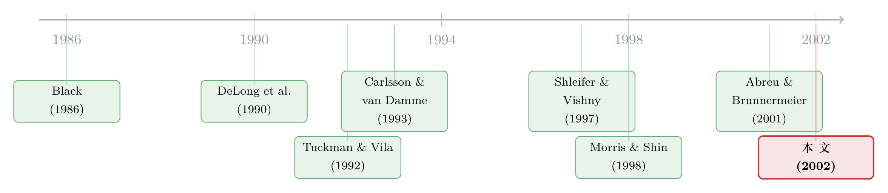

无风险的钱就在眼前，他们却宁愿再等等——「同步风险」与被推迟的套利
本文读的是 Abreu & Brunnermeier (2002, Journal of Financial Economics)：一群理性套利者明明都知道某个资产被错误定价，却迟迟不下手——原因不是他们怕基本面、也不是怕噪声交易者，而是怕别人不和他同时动手。这种「同步风险（synchronization risk）」加上持有成本，足以让套利被显著推迟，从而给行为偏差在中短期影响价格留下了空间。
1 一个让人想不通的场景
先看一个事实。1999 年 4 月，Priceline.com 的市值冲到了 300 亿美元，超过了当时全美所有主要航空公司市值的总和。差不多同期，eBay 的市值超过了 RJR Nabisco，Yahoo 超过了波音，Amazon 超过了 Borders、巴诺、Kmart 和彭尼百货之和。
这些数字摆在那里，华尔街的职业交易员心里大都门儿清：这价格不对。可问题来了——他们明明知道贵，为什么不去做空？
这并不是个别现象。Dammon, Dunn & Spatt (1993) 记录过债券市场上一桩持续两年的离谱定价：RJR Nabisco 三只只在「利息如何支付」上有差别的高收益债，付现金的那只相对于实物支付、递延票息的那两只，长期挂着巨大的溢价。标准的市场摩擦根本解释不了这么大的价差。外汇市场上也一样，某些货币被高估或低估好几年是公认的事，可套利者就是「不敢太早动手」。
于是一个核心问题浮出水面：
为什么即便市场上站满了职业套利者，这类错误定价还能长期存在？
这正是 Abreu 和 Brunnermeier 这篇论文要回答的问题。
2 已有的两种「套利限制」，都不够用
要理解这篇论文的新意，得先知道在它之前，文献是怎么解释「错误定价为什么消不掉」的。
教科书里的有效市场假说 (efficient markets hypothesis) 有一个隐含前提：套利是无风险的，而且职业交易者愿意建立无限大的头寸。Fama (1965)、Ross (2001) 这一脉的观点是：只要有理性套利者在，行为交易者制造的任何错误定价都会被抹平，所以「价格总是对的」。
但现实里没有完全市场。只要一个被错误定价的资产没有完美的替代品，对它的套利就一定带着风险——哪怕你只关心这笔套利最终的收益。沿着这条思路，文献识别出了两类风险：
第一类是基本面风险 (fundamental risk)。 你对冲得再好，组合的基本面价值也可能随时间变化；更何况你的模型未必就是真实的数据生成过程。这种冲击是永久性的。
第二类是噪声交易者风险 (noise trader risk)，由 DeLong et al. (1990a) 提出。 行为交易者的活动会带来暂时性的价格波动。麻烦在于：如果价格在短期内进一步偏离基本面，而你又被迫在中途平仓，你就恰恰在套利机会最大的时候被迫认赔。Shleifer & Vishny (1997) 把这一点讲到了极致——基金经理怕的就是「回撤」：客户看到中途亏损就赎回，于是经理在最不该退的时候被赶下了车。（关于「无风险的钱为什么没人捡」，可参见《无风险的钱没人捡，是因为捡它的人也会怕》。）
这两类风险都有一个共同的故事内核：扭曲的价格在最终回归之前，可能变得更扭曲。
但 Abreu 和 Brunnermeier 说，还有一类风险被整个文献漏掉了。而且它的逻辑和前两类根本不同。
3 真正关键的一步：怕的不是价格，而是「同伴」
接着，一个自然的问题是：如果一个套利者确定价格会在有限时间内回到基本面，他还会犹豫吗？
按古典的逆向归纳 (backward induction) 直觉，他不该犹豫——既然终点确定，往回推，第一个该动手的人就该立刻动手。可这篇论文给出的答案是：他还是会等。 而让他等下去的，正是第三类风险——
同步风险（synchronization risk）：套利者对「其他套利者何时会一起动手」的不确定。
请注意它和噪声交易者风险的区别。噪声交易者风险，担心的是价格会不会更偏离；同步风险，担心的是价格修正的时机——而决定这个时机的，不是噪声交易者的情绪，而是其他理性套利者的市场择时决策。
为什么「同伴何时动手」会变成一种致命的风险？这要靠模型里的三块积木拼起来。
第一块：单枪匹马改不了价。 在模型里，错误定价只有在临界比例 κ < 1 的套利者都基于信息交易后才会消失。在那之前，理性套利者的任何交易失衡，都会被行为交易者当成「订单流里的随机波动」吸收掉。这就引入了一个协调（coordination）的味道：你得和足够多的人一起上。但因为 κ < 1，套利者之间又是竞争的——动手太晚，价格在你之前就修正了，你就错过了利润。协调与竞争，被同时塞进了一个问题里。
第二块：大家「醒悟」的时间不一样。 套利者是顺序地（sequentially）意识到错误定价的。有人在价格刚偏离时就察觉，有人晚一些才知道。关键在于——没有人知道自己是早醒的还是晚醒的。所以即便「所有人都知道价格错了」，也永远不会变成「所有人都知道所有人都知道……」这样的共同知识（common knowledge）。
第三块：持有头寸要花钱。 建立并维持套利头寸要付持有成本（holding costs）。做空尤其贵：保证金账户几乎不付息，券「on special」时甚至要倒贴借券费；还有保证金占用、被召回（recall）的风险、相对业绩考核的压力……D'Avolio (2002)、Duffie et al. (2002) 细致描述过美国证券借贷市场的这些制度性成本。（这一点也可参见《做空之前，你得先借到那张股票》。）
三块拼在一起，结论就出来了：同步风险 + 持有成本 → 套利者推迟动手。 但他们终究会动手——所以套利会发生，只是被显著推迟。这就是论文标题里的 delayed arbitrage。
而最漂亮的地方，恰恰在于它绕开了逆向归纳。古典论证之所以失效，是因为「错误定价」在任何时点都不是套利者之间的共同知识。于是反转出现：终点确定，过程却可以拖很久。
4 模型：把「等待」算成一道择时题
这是一篇理论论文，我们把它的设定和最关键的一步推导掰开讲清楚。
4.1 设定
只有一个风险资产，价格 \(p_t\)，时间 \(t \in [0, \infty)\) 连续。它的基本面价值记为 \(v_t\)。在一个随机时刻 \(t_0\) 发生冲击之前，基本面就是 \(v_t = e^{rt}\)；从 \(t_0\) 起，基本面跳到
$$v_t = (1 + \beta^*)\,e^{rt}, \qquad t \ge t_0.$$
冲击到来的时间 \(t_0\) 服从指数分布：
$$F(t_0) = 1 - e^{-\lambda t_0}.$$
冲击的方向是对称的——涨跌各一半：
$$\beta^* = \begin{cases} -\beta & \text{with prob. } \tfrac{1}{2}, \\[2pt] +\beta & \text{with prob. } \tfrac{1}{2}, \end{cases} \qquad \beta > 0.$$
行为交易者则固执地认为什么都没发生，继续把价格支撑在 \(p_t = e^{rt}\)。他们能撑多久？只要理性套利者的总卖压（以负面冲击为例）还在一个阈值 \(\kappa\) 以下，他们就把这点失衡当噪声吸收掉。一旦总订单失衡越过 \(\kappa\)，价格立刻修正、与基本面对齐。
套利者这边，质量归一化为 1。冲击发生后，在 \([t_0, t_0+\eta]\) 这段时间里，他们以均匀速率顺序地变得知情。一个在 \(t_i\) 时刻醒悟的套利者，称为类型 \(t_i\)，他心里认为 \(t_0\) 均匀分布在 \([t_i - \eta,\ t_i]\) 上——但他不知道自己醒得早还是晚。每个套利者的持仓被限制在 \(x_i \in [-1, 1]\)，每偏离中性组合一单位、每单位时间要付持有成本 \(c\,p_t\,|x_i|\)。
行为交易者的吸收能力随时间衰减——错误定价拖得越久，还相信「价格是对的」的行为交易者就越少。论文用一个线性递减的阈值函数来刻画：
$$\kappa(t - t_0) = \kappa_0\left[\,1 - \tfrac{1}{\bar{\tau}}(t - t_0)\,\right].$$
到 \(t_0 + \bar{\tau}\) 时 \(\kappa(\bar{\tau}) = 0\)，即便没有任何套利者施压，错误定价也会自动被纠正。换句话说，价格修正一定会在有限时间内发生——这正是逆向归纳本「该」起作用的前提。
为了让问题有意思（否则套利者一醒悟就立刻交易），论文限定参数满足
$$c > \frac{\lambda}{1 - e^{-\lambda \eta \kappa_0}}\,\beta.$$
直觉是：持有成本 \(c\) 得足够大，大到让「再等等」变成一件有诱惑的事。
4.2 核心：市场择时条件
每个套利者要决定的，只有一件事：什么时候动手。 论文聚焦于「触发策略（trigger strategy）」——类型 \(t_i\) 的套利者只在 \(t_i + \tau^*\) 这一刻一次性建仓，之前一直持有中性组合（归一化为零）。
借用 Keynes (1936) 的话，每个老练交易者的目标都是「抢在发令枪前起跑（beat the gun）」：紧贴着价格修正之前那一刻交易，收益最高——因为这样付的持有成本最少，又恰好赶上利润。可一旦贪心多等，就可能在修正发生的瞬间被甩在门外。
于是这就成了一道择时的边际权衡。设 \(h(t \mid t_i)\) 为套利者 \(t_i\) 主观感知的、价格在下一刻就修正的危险率（hazard rate）。在一小段时间 \(\Delta\) 里，若他选择此刻就交易：以约 \(h(t\mid t_i)\Delta\) 的概率，价格马上修正，他赚到错误定价 \(b\,p_t\)；若没修正，他白白付了持有成本 \(c\,p_t\,\Delta\)。把两边比一比，令 \(\Delta \to 0\)，Lemma 1 给出的最优条件干净利落——当感知危险率乘以套利收益超过单位持有成本时，立即交易：
这个不等式把整篇论文的张力浓缩进了一行：左边是「再等下去、错过修正」的预期代价，右边是「现在就上、白付成本」的代价。套利者一直按兵不动，直到他自己心里估的危险率高到让等待不再划算的那一刻。而由于每个人醒悟的时间不同、对 \(t_0\) 的估计不同，他们的危险率上升曲线也错开了——这就是「迟迟没人先动手」的微观来源。
4.3 比较静态：什么让错误定价更顽固
把上面的均衡解出来，几个比较静态结论非常符合直觉，却又意味深长：
- 错误定价的持续时间，随持有成本 \(c\)、意见分散度 \(\eta\)、行为交易者的吸收能力 \(\kappa_0\) 增大而增大；
- 错误定价越大，每个人单独动手的诱惑就越强，价格回归得越快；
- 当错误定价超过某个由 \(\eta\) 等参数决定的边界时，套利者会毫不拖延地立刻交易。
最后这一点呼应了 Black (1986) 那个半开玩笑的论断：基本面价值大致落在当前价格的一半到两倍之间。在这个区间内，基本面只是价格围着波动的一只「锚」；超出这个区间，套利的引力才足够强到立刻把价格拉回。
论文还有一个漂亮的推广：把持有成本做成非对称的——做空(卖出)的成本本就高于做多(买入)。由于坏消息要靠做空来兑现、好消息靠做多，坏消息那一侧的套利会被压得更慢。这就给 Hong, Lim & Stein (2000) 那个著名的「坏消息传得慢（bad news travels slowly）」提供了一个纯理性的解释。（关于消息为何「慢半拍」，亦可参见《新闻里那条「坏消息」，市场为什么总要慢半拍才信？》。）
5 文献脉络
这条线索的起点，是对「价格总是对的」这一信条的不满。Black (1986) 的《Noise》先把「噪声」请进了资产定价；紧接着 DeLong, Shleifer, Summers & Waldmann (1990a) 用噪声交易者风险给出了第一个正式的套利限制模型。Tuckman & Vila (1992) 则强调了另一条腿——持有成本比交易成本更要命，并用美国国债市场的数据做了支撑。
到了 1990 年代末，Shleifer & Vishny (1997) 的《The Limits of Arbitrage》把「基金经理怕回撤」这件事讲成了套利限制的范式之作。与此同时，博弈论这边，Carlsson & van Damme (1993) 开创的全局博弈（global games）方法，被 Morris & Shin (1998) 用到货币攻击上，处理的正是「大家要不要一起动手」的协调难题。

Abreu 和 Brunnermeier 的工作，正站在这两条河流的交汇处。它建立在他们自己的 Abreu & Brunnermeier (2001, Econometrica)《Bubbles and Crashes》之上，但有意识地不属于 Carlsson–van Damme 那类全局博弈——它靠的是顺序醒悟而非信息噪声来打破共同知识。论文的独到之处在于：即便假设所有套利者的总资源足够纠正错误定价、且修正必然在有限时间内发生，套利依然会被推迟。它不只是给持久错误定价提供了又一个解释，更放大了早期文献里那些套利限制的效果。（关于把套利者从「原子」变成会算计的博弈玩家，可参见《无风险的钱，为什么没人捡？——把「套利者」从原子变成博弈玩家》；关于「明知稳赚却只做一半」的动态选择，可参见《明明是「稳赚」的套利，他却故意只做一半》。）
6 评论与延伸（Q&A + 研究方向）
(a) 几个可能的疑问
Q：同步风险和噪声交易者风险，到底差在哪？
差在「怕什么」。噪声交易者风险怕的是价格会更偏离基本面（来自噪声交易者的情绪）；同步风险怕的是价格修正的时机抓不准（来自其他理性套利者的择时）。前者是关于「价格水平」的不确定，后者是关于「协调时点」的不确定。论文还指出，同步风险会叠加并放大噪声交易者风险，而不是替代它。
Q：既然修正在有限时间内必然发生，逆向归纳为什么不奏效？
因为逆向归纳要求「错误定价是共同知识」。在这个模型里，套利者顺序醒悟，谁都不知道自己醒得早还是晚，于是「所有人都知道所有人都知道……」这条无穷链条永远断在某一层。共同知识不成立，从终点往回推的论证就失去了支点。
Q：这是不是又一个「套利者太穷／太短视」的故事？
不是，这恰恰是它最硬的地方。Shleifer–Vishny 那一脉靠的是「资源不足／怕赎回」。本文假设套利者的总资源足以纠正错误定价、风险中性、且修正必然发生，错误定价照样持续。限制来自协调与择时本身，而非财富约束。
Q：那为什么错误定价大到一定程度，套利者反而立刻动手？
因为套利收益 \(b\) 大了，市场择时条件 \(h(t\mid t_i)\,b \ge c\) 的左边被推高——哪怕感知危险率还很低，单独动手也已经划算。这正是 Black (1986) 那个「半倍到两倍」直觉的模型化：基本面在一个区间内只是「锚」，越出区间，套利引力立刻把价格拽回。
Q：模型怎么解释「坏消息传得慢」？
把持有成本做成非对称的：做空比做多贵。坏消息要靠做空兑现，于是 \(c\) 在做空那侧更大，市场择时条件更难满足，套利被压得更慢，价格向下修正因此更迟缓。这给 Hong–Lim–Stein (2000) 的经验发现提供了一个理性微观基础。
Q：模型对「研究并使用信息」有什么含义？
一个有点反直觉的推论：协调激励会让套利者只愿意研究别人也在用的信息，而忽略「没人理会」的信息——哪怕后者在基本面上更重要。研究和使用「沉睡的新闻（sleepy news）」不划算。这给「信息的时尚与潮流」也提供了一个理性解释。
(b) 几个可能的研究问题与提案
1. 公司债市场的「延迟套利」直接检验。 【经济故事】公司债天然带着高持有成本（做空难、券源稀缺、保证金占用重），又常出现同一发行人不同券之间的相对错误定价——这正是同步风险该最显著的场景。如果模型对，错误定价的持续时间应随借券成本、做市商吸收能力上升而拉长。 【可行性】中。需要 TRACE 逐笔成交、Markit 借券费率、同发行人「孪生债」配对，识别上可用借券费率的外生波动做工具。难点是「同步」这件事本身难以直接观测，只能从持续时间的横截面差异间接推断。
2. 外资持有人作为「异步时钟」。 【经济故事】不同国别的投资者醒悟时间天然错开（时区、信息渠道、监管约束），正好对应模型里的「顺序醒悟」。外资持有占比高的债券／股票，其错误定价的修正是否系统性更慢？ 【可行性】中。需要跨境持仓数据（如 TIC、各国央行持有人登记）配合错误定价度量。识别可借「可投资度」放开之类的自然实验制造外资准入的外生变化。诚实地说，把「醒悟时点的分散度」量出来是最大的拦路虎。
3. 危机期间的「同步崩溃」与流动性。 【经济故事】模型预测套利者会扎堆在某个临界点附近同时动手——这天然对应市场里「平时没事、一动全动」的流动性骤降。把同步风险和流动性共动联系起来，或可解释为何错误定价能长期潜伏、却在某一刻突然集中释放。（相关思路可参见《音乐停了，谁还在跳舞？——一个关于「延迟的危机」的理性预期模型》。） 【可行性】中偏低。需要高频订单流＋持仓数据来识别「集中动手」的时点，纯观测数据很难把「同步」和「共同冲击」分开。更现实的路径或许是实验室市场。
4. 非对称持有成本与「坏消息慢」的因果检验。 【经济故事】模型给出一个清晰的可证伪预测：做空越贵的资产，其向下修正越慢。借券费率提供了一把现成的尺子。 【可行性】高。借券费率、做空余额、价格修正速度都有数据，识别可用券源冲击（如指数调整、可借股票供给变化）。这是几个方向里最 doable 的一个。
7 我的判断
这篇论文的贡献，在我看来是把「套利限制」的讨论从资源与风险推进到了协调与时机。它最聪明的一招，是在最不利于自己的假设下——总资源足够、风险中性、修正必然发生——依然得出了持久错误定价，从而把逆向归纳这把「有效市场」的利器，用共同知识的缺失干净地化解掉。这比「套利者太穷」的故事更深，也更难被一句「那加大资本就行了」反驳掉。
对识别（这里指模型的经验含义）我有两点担心。其一，模型的核心驱动——意见分散度 \(\eta\) 与主观危险率——在数据里几乎不可直接观测，所有检验都得绕道「持续时间」的间接推断，这让证伪变得困难。其二，阈值 \(\kappa(\cdot)\) 线性递减、\(t_0\) 服从指数分布这些设定是为了可解性而选的，主结论虽然论文声称对一般递减的 \(\kappa\) 稳健（只要 \(-\partial\kappa/\partial(t-t_0) < 1/\eta\)），但「行为交易者吸收能力随时间确定性衰减」这个外生设定本身，承担了不少叙事重量。
后续我最想看到的，是把这套「同步—择时」逻辑搬到一个有真实持仓与借券微观数据的市场里去，尤其是公司债和信用市场——那里持有成本高、替代品不完美、同发行人孪生券随处可见，是检验「延迟套利」最自然的试验场。如果能用借券费率的外生冲击，把「做空越贵→修正越慢」这条非对称预测做成一个干净的因果检验，这篇 2002 年的理论就能在二十多年后拿到一张分量十足的经验背书。
参考文献
- Abreu, D., Brunnermeier, M.K. (2001). Bubbles and crashes. Econometrica (forthcoming).
- Allen, F., Gorton, G. (1993). Churning bubbles. Review of Economic Studies 60, 813–836.
- Black, F. (1986). Noise. Journal of Finance 41(3), 529–543.
- Brennan, M.J. (1990). Latent assets. Journal of Finance 45, 709–730.
- Carlsson, H., van Damme, E. (1993). Global games and equilibrium selection. Econometrica 61(5), 989–1018.
- Dammon, R.M., Dunn, K.B., Spatt, C.S. (1993). The relative pricing of high-yield debt: the case of RJR Nabisco Holdings Capital Corporation. American Economic Review 83(5), 1090–1111.
- D'Avolio, G. (2002). The market for borrowing stock. Journal of Financial Economics 66(2–3), 271–306.
- DeLong, J.B., Shleifer, A., Summers, L.H., Waldmann, R.J. (1990a). Noise trader risk in financial markets. Journal of Political Economy 98(4), 703–738.
- Duffie, D., Gârleanu, N., Pedersen, L.H. (2002). Securities lending, shorting, and pricing. Journal of Financial Economics 66(2–3), 307–339.
- Fama, E.F. (1965). The behavior of stock-market prices. Journal of Business 38, 34–105.
- Hong, H., Lim, T., Stein, J.C. (2000). Bad news travels slowly: size, analyst coverage, and the profitability of momentum strategies. Journal of Finance 55(1), 265–295.
- Keynes, J.M. (1936). The General Theory of Employment, Interest and Money. Macmillan, London.
- Morris, S., Shin, H. (1998). Unique equilibrium in a model of self-fulfilling currency attacks. American Economic Review 88(3), 587–596.
- Ofek, E., Richardson, M. (2001). DotСom mania: the rise and fall of internet stocks. NYU Stern School working paper FIN-01-037.
- Shleifer, A., Vishny, R.W. (1997). The limits of arbitrage. Journal of Finance 52(1), 35–55.
- Tuckman, B., Vila, J.-L. (1992). Arbitrage with holding costs: a utility-based approach. Journal of Finance 47(4), 1283–1302.